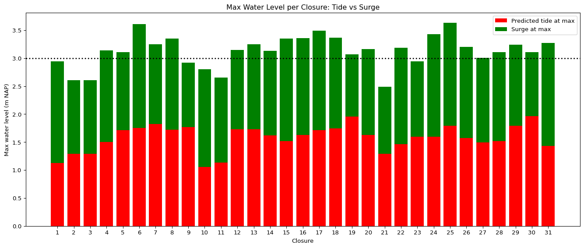
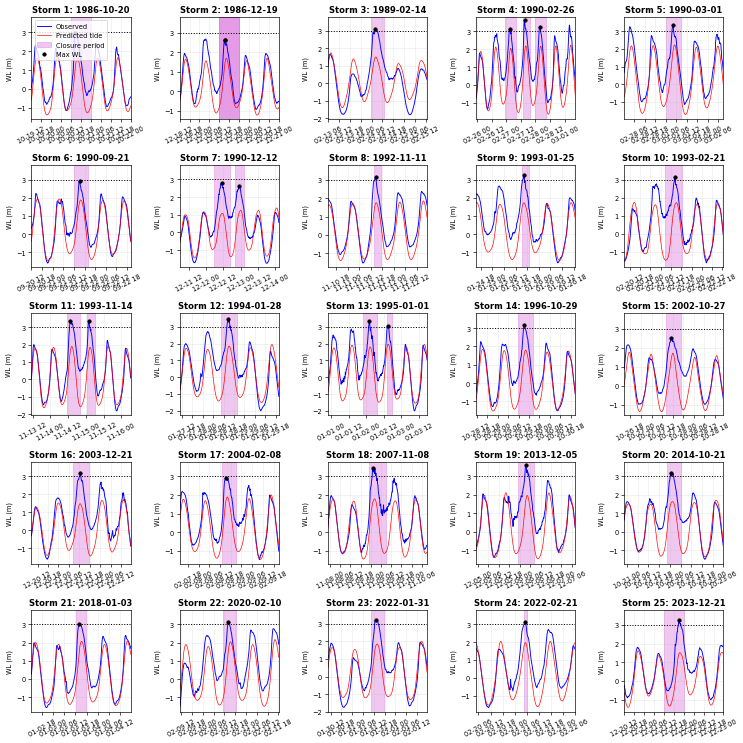

Analysis configuration:
Water years: 1986/87 to 2024/25 (39 years)Eastern Scheldt Barrier
Barrier Closures
Closures per water year calculated for 39 years
Total closures: 31
Min per year: 0.0
Mean per year: 0.79
Max per year: 4.0
Storm Start of Closure End of Closure Water Year
0 1 1986-10-20 12:00:00 1986-10-21 00:00:00 1986/87
1 2 1986-12-19 12:00:00 1986-12-20 00:00:00 1986/87
2 2 1986-12-19 12:00:00 1986-12-20 00:00:00 1986/87
3 3 1989-02-14 05:40:00 1989-02-14 12:50:00 1988/89
4 4 1990-02-26 23:10:00 1990-02-27 08:00:00 1989/90
5 4 1990-02-27 13:50:00 1990-02-27 19:50:00 1989/90
6 4 1990-02-27 23:40:00 1990-02-28 08:40:00 1989/90
7 5 1990-03-01 00:10:00 1990-03-01 08:50:00 1989/90
8 6 1990-09-21 12:00:00 1990-09-21 20:00:00 1990/91
9 7 1990-12-12 05:40:00 1990-12-12 16:50:00 1990/91
10 7 1990-12-12 20:10:00 1990-12-13 02:20:00 1990/91
11 8 1992-11-11 13:40:00 1992-11-11 17:30:00 1992/93
12 9 1993-01-25 15:30:00 1993-01-25 18:50:00 1992/93
13 10 1993-02-21 08:40:00 1993-02-21 18:40:00 1992/93
14 11 1993-11-14 11:10:00 1993-11-14 20:00:00 1993/94
15 11 1993-11-15 00:40:00 1993-11-15 06:20:00 1993/94
16 12 1994-01-28 10:40:00 1994-01-28 19:50:00 1993/94
17 13 1995-01-01 21:40:00 1995-01-02 07:30:00 1994/95
18 13 1995-01-02 14:20:00 1995-01-02 17:40:00 1994/95
19 14 1996-10-29 11:40:00 1996-10-29 20:30:00 1996/97
20 15 2002-10-27 14:30:00 2002-10-27 22:50:00 2002/03
21 16 2003-12-21 08:30:00 2003-12-21 17:30:00 2003/04
22 17 2004-02-08 13:20:00 2004-02-08 21:00:00 2003/04
23 18 2007-11-08 22:40:00 2007-11-09 09:10:00 2007/08
24 19 2013-12-05 22:50:00 2013-12-06 08:00:00 2013/14
25 20 2014-10-21 22:30:00 2014-10-22 06:00:00 2014/15
26 21 2018-01-03 12:10:00 2018-01-03 17:50:00 2017/18
27 22 2020-02-10 11:09:00 2020-02-10 18:16:00 2019/20
28 23 2022-01-31 10:23:00 2022-01-31 17:42:00 2021/22
29 24 2022-02-21 04:46:00 2022-02-21 06:15:00 2021/22
30 25 2023-12-21 12:00:00 2023-12-22 00:00:00 2023/24Observed Water Level Time Series
Load the main tide gauge dataset from the RPBU gauge covering April 1987 to December 2022.
Loaded RPBU 1987-2022: 1,878,480 data points
Start: 1987-04-15 00:00:00
End: 2022-12-31 23:50:00
Valid data: 1,876,721 points (99.9%)Load the 2023 data from the RPBU gauge to extend the time series.
Loaded RPBU 2023: 52,560 data points
Start: 2023-01-01 00:00:00
End: 2023-12-31 23:50:00
Valid data: 52,560 points (100.0%)Load data from the OS4 gauge, which provides coverage for the early period before RPBU data begins.
Loaded OS4 1982-2023: 2,208,960 data points
Start: 1982-01-01 00:00:00
End: 2023-12-31 23:50:00
Valid data: 2,161,485 points (97.9%)Combine the time series from different gauges to create a continuous record. Use OS4 data for the early period (1986-1987) before RPBU starts, then switch to RPBU data for the main period.
Combined time series: 1,998,576 data points
Start: 1986-01-01 00:00:00
End: 2023-12-31 23:50:00
Valid data: 1,996,699 points (99.9%)
Time span: 13878 days
Tidal Harmonic Analysis
Analysis configuration:
Years: 1986 to 2023 (38 years)
Data quality threshold: 60%
Latitude: 51.64°Loaded 1,998,576 data points
Start: 1986-01-01 00:00:00
End: 2023-12-31 23:50:00
Valid data: 1,996,699 points (99.9%)
Calculating data quality per year...
Data quality summary:
Range: 98.8% to 100.0%
Mean: 99.9%
Years with quality >= 60%: 38/38
Loading existing tidal analysis results...
Loaded existing results:
Total predictions: 1,998,576 points
Start: 1986-01-01 00:00:00
End: 2023-12-31 23:50:00This figure compares observed water levels (blue) with predicted astronomical tides (red) from harmonic analysis. The predicted tides represent the astronomical component only, while observed water levels include both tides and meteorological effects.

Storm Start of Closure End of Closure Max WL Max WL Time \
0 1 1986-10-20 12:00:00 1986-10-21 00:00:00 2.94 1986-10-20 14:30:00
1 2 1986-12-19 12:00:00 1986-12-20 00:00:00 2.61 1986-12-19 15:10:00
2 2 1986-12-19 12:00:00 1986-12-20 00:00:00 2.61 1986-12-19 15:10:00
3 3 1989-02-14 05:40:00 1989-02-14 12:50:00 3.14 1989-02-14 08:10:00
4 4 1990-02-26 23:10:00 1990-02-27 08:00:00 3.11 1990-02-27 02:40:00
5 4 1990-02-27 13:50:00 1990-02-27 19:50:00 3.61 1990-02-27 15:00:00
6 4 1990-02-27 23:40:00 1990-02-28 08:40:00 3.25 1990-02-28 03:20:00
7 5 1990-03-01 00:10:00 1990-03-01 08:50:00 3.35 1990-03-01 03:50:00
8 6 1990-09-21 12:00:00 1990-09-21 20:00:00 2.92 1990-09-21 15:10:00
9 7 1990-12-12 05:40:00 1990-12-12 16:50:00 2.80 1990-12-12 10:40:00
10 7 1990-12-12 20:10:00 1990-12-13 02:20:00 2.65 1990-12-12 23:00:00
11 8 1992-11-11 13:40:00 1992-11-11 17:30:00 3.15 1992-11-11 14:40:00
12 9 1993-01-25 15:30:00 1993-01-25 18:50:00 3.25 1993-01-25 16:20:00
13 10 1993-02-21 08:40:00 1993-02-21 18:40:00 3.13 1993-02-21 14:20:00
14 11 1993-11-14 11:10:00 1993-11-14 20:00:00 3.35 1993-11-14 13:20:00
15 11 1993-11-15 00:40:00 1993-11-15 06:20:00 3.36 1993-11-15 02:00:00
16 12 1994-01-28 10:40:00 1994-01-28 19:50:00 3.49 1994-01-28 14:30:00
17 13 1995-01-01 21:40:00 1995-01-02 07:30:00 3.37 1995-01-02 02:10:00
18 13 1995-01-02 14:20:00 1995-01-02 17:40:00 3.07 1995-01-02 14:50:00
19 14 1996-10-29 11:40:00 1996-10-29 20:30:00 3.16 1996-10-29 15:20:00
20 15 2002-10-27 14:30:00 2002-10-27 22:50:00 2.49 2002-10-27 17:00:00
21 16 2003-12-21 08:30:00 2003-12-21 17:30:00 3.19 2003-12-21 12:30:00
22 17 2004-02-08 13:20:00 2004-02-08 21:00:00 2.94 2004-02-08 15:10:00
23 18 2007-11-08 22:40:00 2007-11-09 09:10:00 3.43 2007-11-09 01:10:00
24 19 2013-12-05 22:50:00 2013-12-06 08:00:00 3.63 2013-12-06 03:40:00
25 20 2014-10-21 22:30:00 2014-10-22 06:00:00 3.20 2014-10-22 00:50:00
26 21 2018-01-03 12:10:00 2018-01-03 17:50:00 3.01 2018-01-03 14:00:00
27 22 2020-02-10 11:09:00 2020-02-10 18:16:00 3.11 2020-02-10 14:10:00
28 23 2022-01-31 10:23:00 2022-01-31 17:42:00 3.24 2022-01-31 13:20:00
29 24 2022-02-21 04:46:00 2022-02-21 06:15:00 3.11 2022-02-21 05:20:00
30 25 2023-12-21 12:00:00 2023-12-22 00:00:00 3.27 2023-12-21 21:00:00
Pred Tide @ Max Surge @ Max
0 1.129013 1.810987
1 1.288876 1.321124
2 1.288876 1.321124
3 1.505884 1.634116
4 1.714849 1.395151
5 1.754419 1.855581
6 1.822307 1.427693
7 1.720589 1.629411
8 1.767947 1.152053
9 1.051664 1.748336
10 1.136948 1.513052
11 1.731186 1.418814
12 1.729342 1.520658
13 1.621703 1.508297
14 1.514953 1.835047
15 1.627986 1.732014
16 1.717153 1.772847
17 1.748693 1.621307
18 1.954873 1.115127
19 1.627758 1.532242
20 1.286913 1.203087
21 1.464645 1.725355
22 1.599734 1.340266
23 1.598775 1.831225
24 1.793586 1.836414
25 1.574673 1.625327
26 1.492736 1.517264
27 1.517694 1.592306
28 1.795375 1.444625
29 1.966079 1.143921
30 1.434981 1.835019 Saved data to output/mast1.pkl
